Best Animal Encounters
Australia
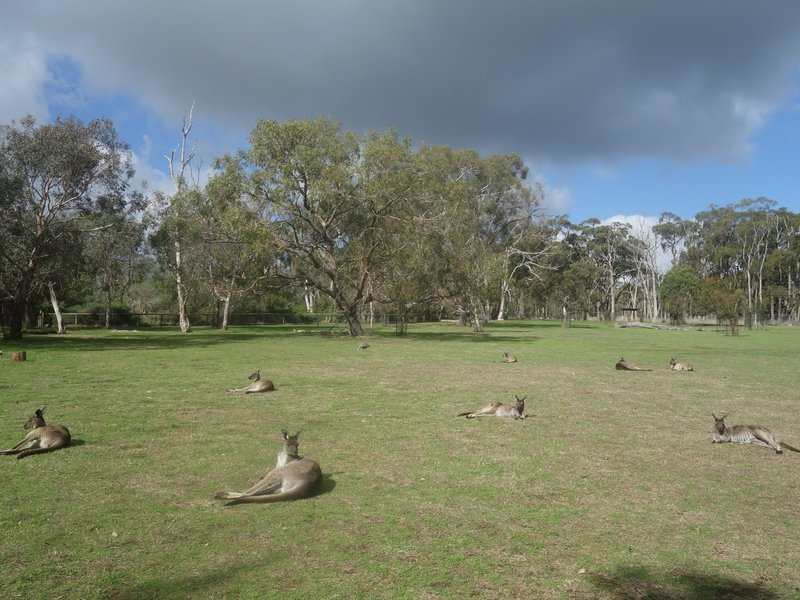
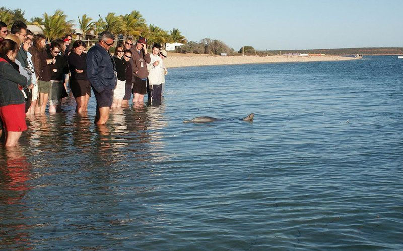

Ningaloo Reef Whale Shark Swim
Exmouth, Western Australia
The world's most reliable place to swim with whale sharks in the wild, operating during the annual March–July season when these giant filter feeders aggregate in the warm waters off the Ningaloo coast.
Belize
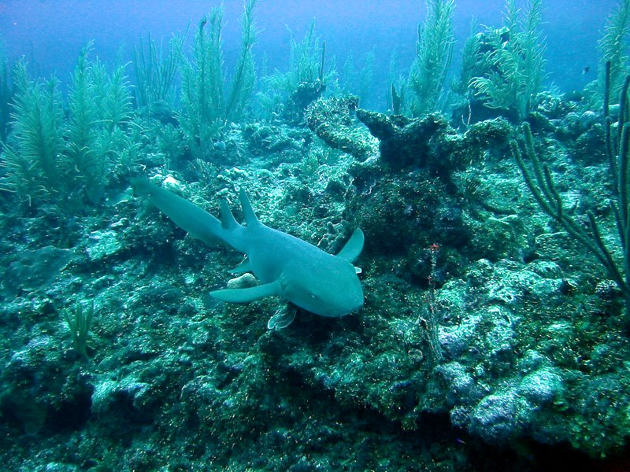
Costa Rica
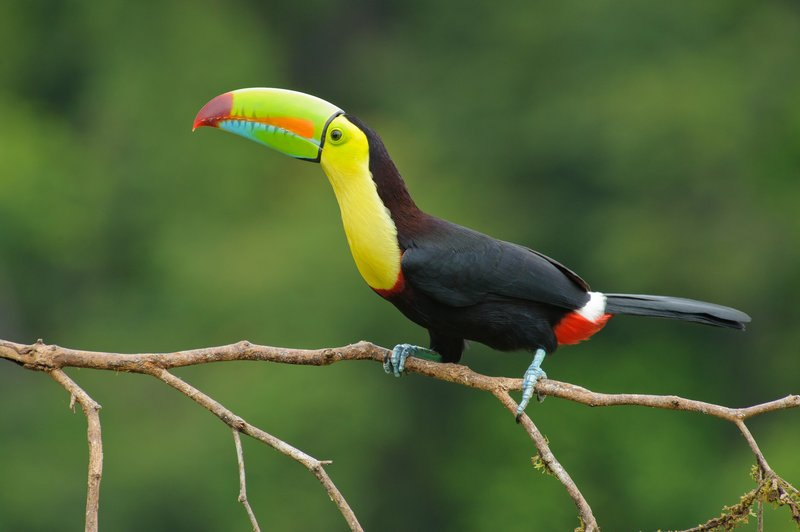
Ecuador
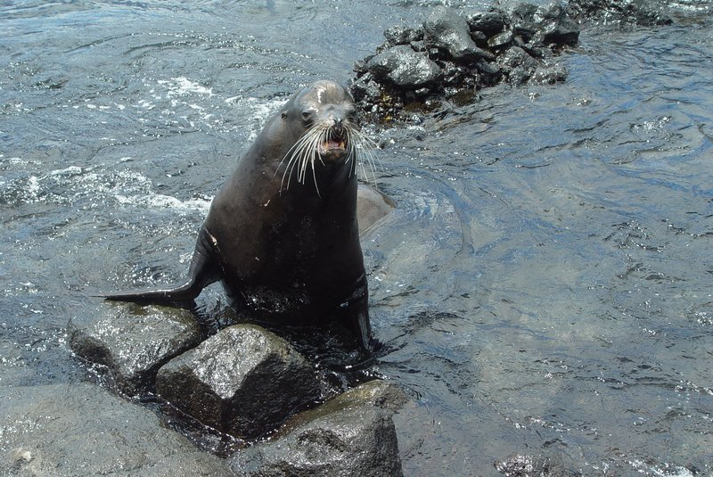
Galápagos Islands Wildlife Encounters
Galápagos Archipelago
The Galápagos are unmatched for fearless wildlife. Sea lions sleep on benches, marine iguanas sun themselves on footpaths, blue-footed boobies nest within arm's reach, and giant tortoises lumber through highland pastures — animals that evolved without natural predators and remain completely unafraid of people.
Japan
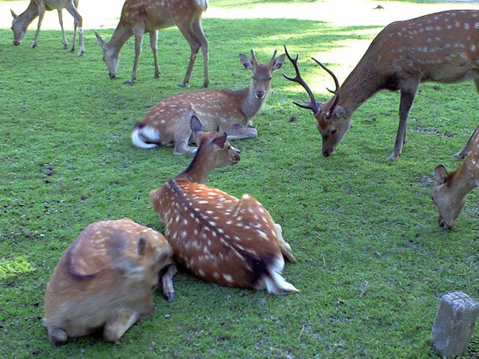
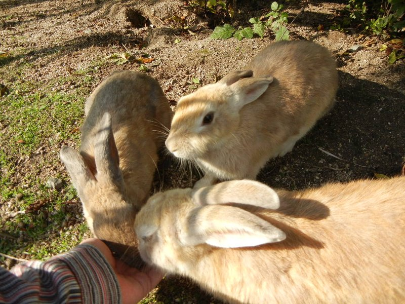
Ōkunoshima (Rabbit Island)
Ōkunoshima, Hiroshima Prefecture
A small island in the Seto Inland Sea overrun by hundreds of feral domestic rabbits that swarm visitors in search of food. Reachable by a short ferry, the island offers an unusual and extremely tactile experience with animals that have no fear of people.
Kenya
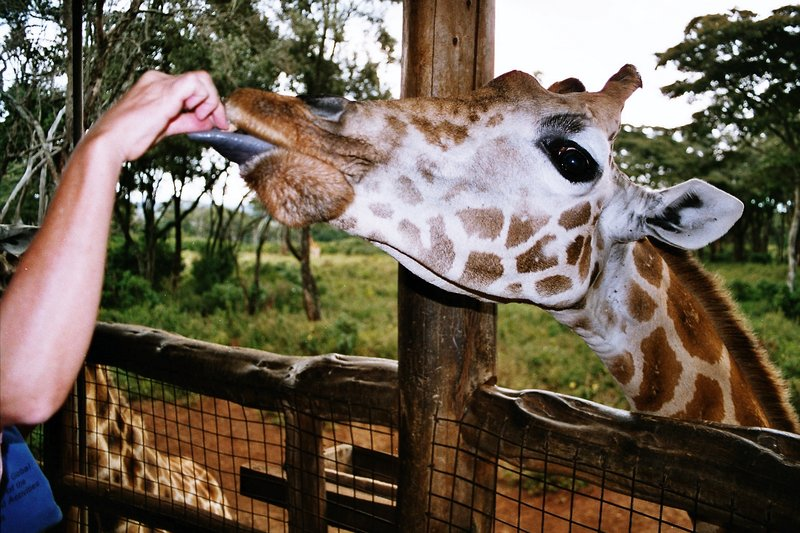
Giraffe Centre
Langata, Nairobi
A breeding center for the endangered Rothschild's giraffe on the outskirts of Nairobi where visitors stand on an elevated platform and hand-feed adult giraffes, who often press their long tongues into your palm. Run by the African Fund for Endangered Wildlife.
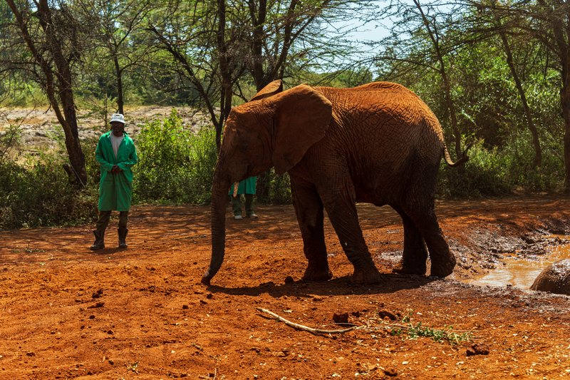
David Sheldrick Wildlife Trust
Nairobi National Park, Nairobi
The world's most successful elephant orphan rescue and rehabilitation program, operating within Nairobi National Park. A daily public visit at 11 a.m. lets a small group watch orphaned baby elephants mud-bath, play, and interact with their keepers before returning to the bush.
Malaysia
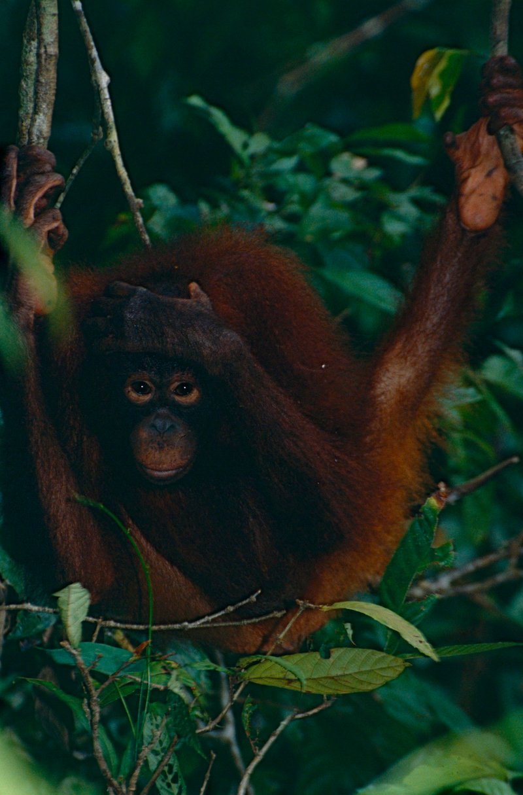
Sepilok Orangutan Rehabilitation Centre
Sandakan, Sabah, Borneo
One of only four orangutan sanctuaries in the world, set in a protected forest reserve outside Sandakan. Twice-daily feedings at an open-air platform bring wild and semi-wild orangutans down from the canopy, offering close and unscripted encounters.
Maldives
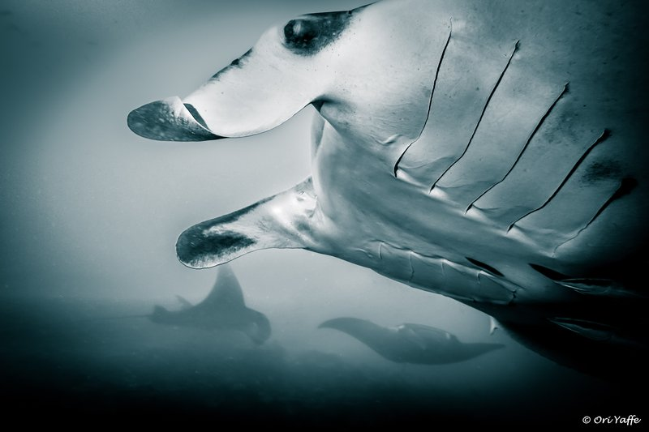
Hanifaru Bay Manta Ray Aggregation
Baa Atoll, Maldives
A UNESCO Biosphere Reserve and one of the world's most important manta ray feeding grounds. During the southwest monsoon season (June–November), hundreds of reef and oceanic manta rays gather to feed on plankton-rich upwellings in a single bay, snorkelers permitted.
Mexico
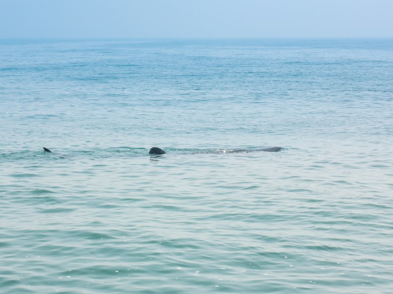
Isla Mujeres Whale Shark Tour
Isla Holbox / Isla Mujeres, Quintana Roo
Every summer (June–September), the largest aggregation of whale sharks on Earth gathers in the warm waters off the Yucatán Peninsula. Regulated tours by boat bring small groups into the water to snorkel alongside dozens of these gentle filter feeders, some over 12 meters long.
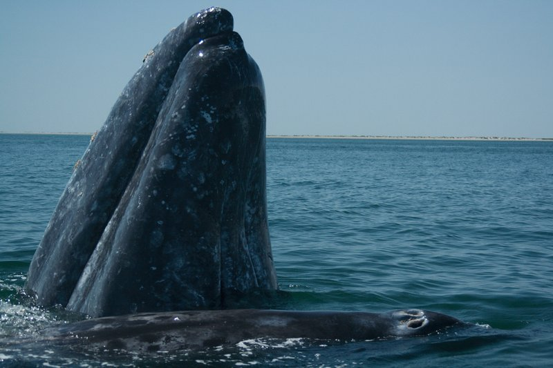
Gray Whale Encounter, Laguna San Ignacio
San Ignacio Lagoon, Baja California Sur
The lagoons of Baja California are the only place on Earth where wild gray whales actively seek out small boats and allow themselves to be touched. Mothers bring their calves alongside pangas and lift them to be petted — the most extraordinary voluntary human-whale interaction in the world.
New Zealand
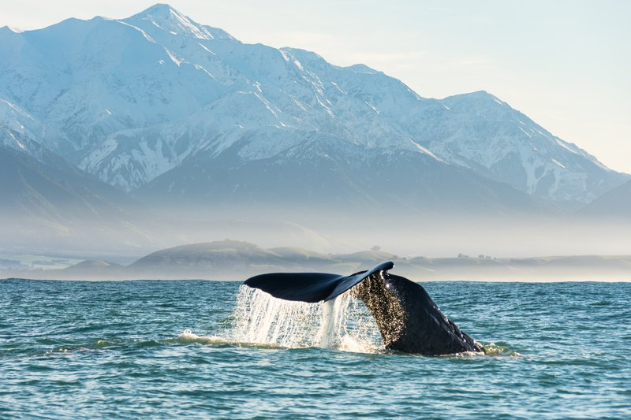
Kaikōura Sperm Whale Watching
Kaikōura, Canterbury
A deep submarine canyon close to shore makes Kaikōura one of the only places in the world where sperm whales can be reliably seen year-round from small boats. The town is also a hub for swimming with dusky dolphins and seeing New Zealand fur seals.
Philippines
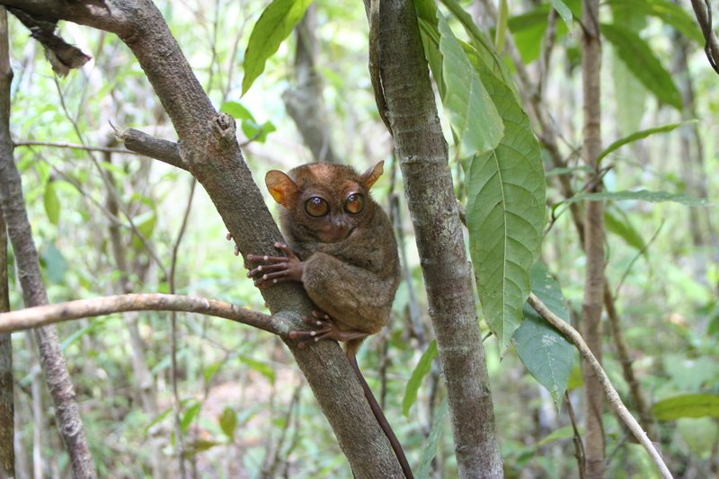
Philippine Tarsier Sanctuary
Corella, Bohol
One of the few sanctuaries where the Philippine tarsier — one of the world's smallest primates, with enormous eyes and the ability to rotate its head 180 degrees — can be seen in a protected semi-wild setting. Strict silence protocols protect these highly sensitive animals.
South Africa
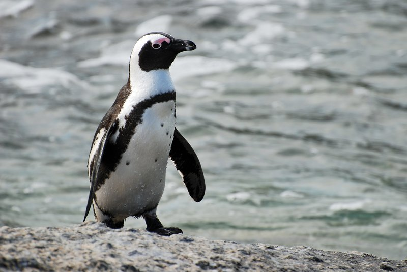
Boulders Beach African Penguin Colony
Simon's Town, Cape Peninsula
A sheltered beach within Table Mountain National Park that is home to a colony of over 2,000 African penguins. Boardwalks bring visitors within meters of nesting birds, and penguins routinely wander the town streets and adjacent swimming beach.
Thailand
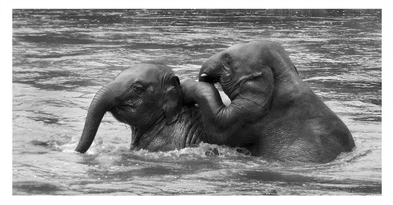
Elephant Nature Park
Mae Taeng, Chiang Mai Province
A rescue and rehabilitation sanctuary for elephants in northern Thailand's Mae Taeng valley. Visitors walk among freely roaming rescued elephants, feed them, and observe their social behavior in a forested sanctuary where the animals are never ridden or made to perform.
Uganda
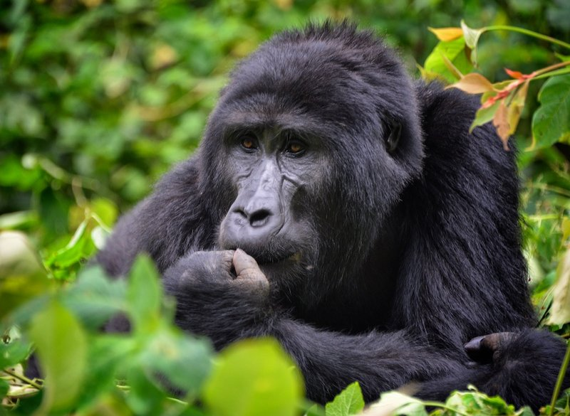
Mountain Gorilla Trekking, Bwindi
Bwindi Impenetrable National Park
One of the few places on Earth where tourists can observe wild mountain gorillas at close range. Guided treks through dense forest lead to habituated family groups, where a one-hour visit allows face-to-face encounters with silverbacks, mothers, and juveniles. Uganda offers more gorilla families for trekking than anywhere else.
United States
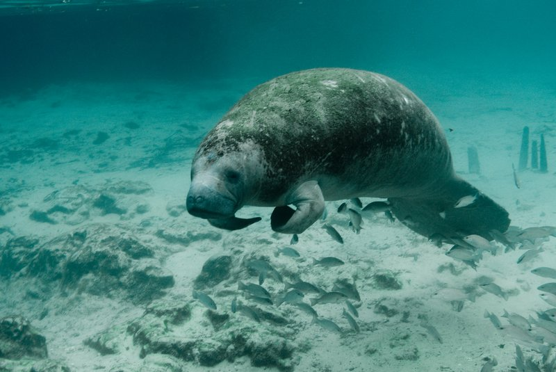
Crystal River Manatee Swim
Crystal River, Florida
The only place in the United States where it is legal to swim with wild manatees. Every winter, hundreds of West Indian manatees gather in the warm spring-fed waters of Kings Bay to escape the cold Gulf of Mexico. Snorkeling tours operate from November through March.
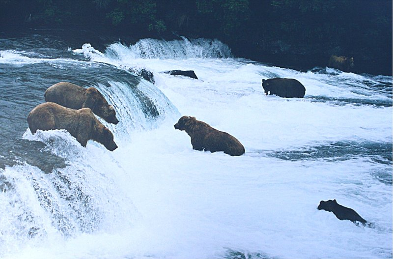
Katmai Brown Bear Viewing
Brooks Falls, Katmai National Park, Alaska
Every July, dozens of brown bears gather at Brooks Falls to catch sockeye salmon leaping upstream. Viewing platforms elevated above the falls bring visitors within meters of bears at peak fishing intensity — one of the most concentrated and accessible large-predator experiences in the world.
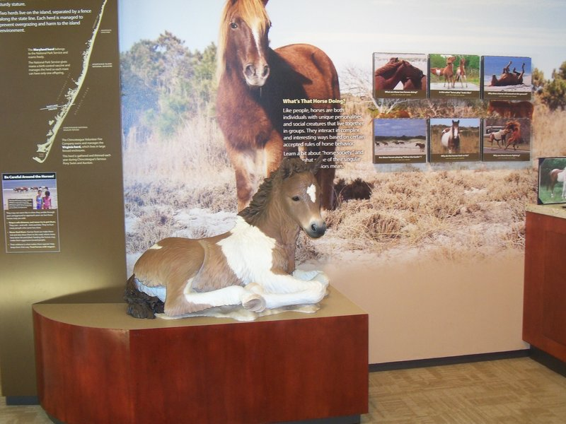
Assateague Island Wild Horses
Assateague Island, Maryland / Virginia
A barrier island straddling Maryland and Virginia where feral horses have lived for centuries, likely descended from livestock shipwrecks. The horses wander campgrounds, beaches, and roadsides, sometimes approaching cars, and are managed separately by the two states — no fencing separates the animals from visitors.
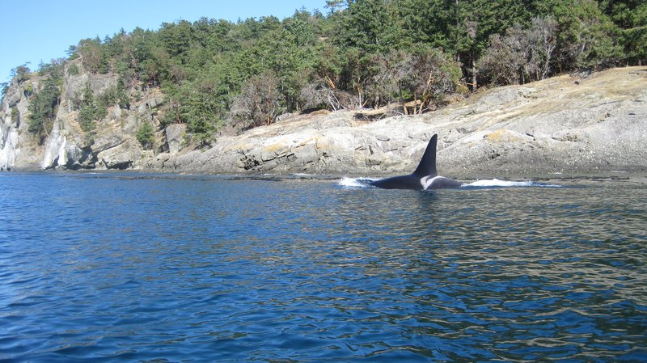
Pacific Whale Watching, San Juan Islands
San Juan Islands, Washington
The inland waters around the San Juan Islands are home to resident and transient orca pods, with a viewing season running spring through fall. Trips from Friday Harbor and Anacortes put passengers alongside orcas, minke whales, and Dall's porpoises in the cold clear waters of Puget Sound.
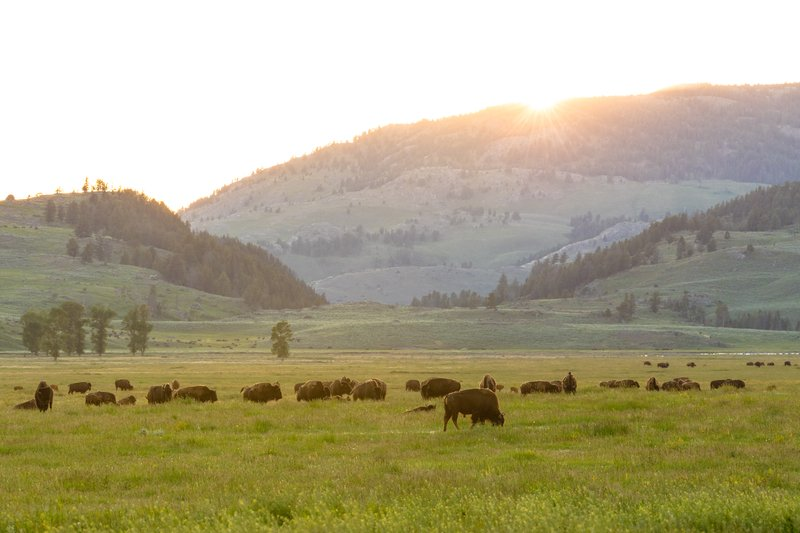
Yellowstone Bison and Wolf Watching
Lamar Valley, Yellowstone National Park, Wyoming
Lamar Valley is often called "the Serengeti of North America." Bison herds of hundreds move through the valley, and the reintroduced wolf packs are watched daily by enthusiasts with spotting scopes. Grizzly bears, pronghorn, and elk round out a wildlife density unmatched in the lower 48 states.